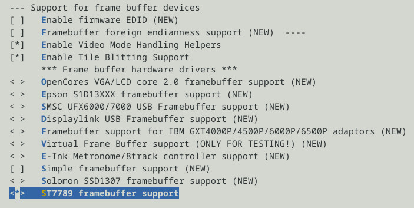
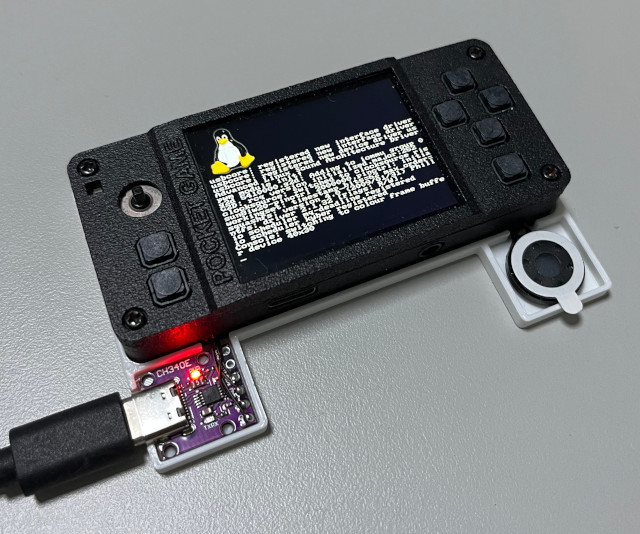
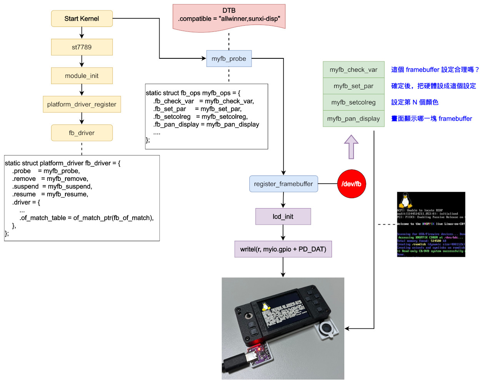

Steward
分享是一種喜悅、更是一種幸福
掌機 - Gaviar (小志掌機) - 移植Kernel framebuffer
司徒看了一下目前Tina-Linux裡面的Video Framebuffer Driver，發現這個Video Driver是為了可以透過初始化參數的設定就可以點屏，架構相對來說比較複雜一點，對於初期可以很快拿來使用，但是後期我們要做最佳化時，會變成是一個瓶頸，司徒覺得不適合我們短小精幹的小志掌機，為此，司徒將小志掌機的顯示驅動拆成如下三個階段製作：
階段一：使用I/O Toggle方式顯示 階段二：使用DMA方式顯示 階段三：加上INT中斷掃屏
framebuffer位於drivers/video/fbdev資料夾，因此，我們創建一個新檔案st7789.c
/*
* This program is free software; you can redistribute it and/or modify
* it under the terms of the GNU General Public License as published by
* the Free Software Foundation; either version 2 of the License, or
* (at your option)any later version.
*
* This program is distributed in the hope that it will be useful,
* but WITHOUT ANY WARRANTY; without even the implied warranty of
* MERCHANTABILITY or FITNESS FOR A PARTICULAR PURPOSE. See the
* GNU General Public License for more details.
*
* You should have received a copy of the GNU General Public License
* along with this program; if not, write to the Free Software
* Foundation, Inc., 59 Temple Place, Suite 330, Boston, MA 02111-1307 USA
*/
#include <linux/cdev.h>
#include <linux/module.h>
#include <linux/kernel.h>
#include <linux/fb.h>
#include <linux/dma-mapping.h>
#include <linux/device.h>
#include <linux/backlight.h>
#include <linux/platform_device.h>
#include <linux/uaccess.h>
#include <linux/pm_runtime.h>
#include <linux/interrupt.h>
#include <linux/wait.h>
#include <linux/clk.h>
#include <linux/cpufreq.h>
#include <linux/console.h>
#include <linux/spinlock.h>
#include <linux/slab.h>
#include <linux/delay.h>
#include <linux/lcm.h>
#include <linux/clk-provider.h>
#include <video/of_display_timing.h>
#include <linux/gpio.h>
#include <linux/omapfb.h>
#include <linux/compiler.h>
#include <linux/workqueue.h>
#include <linux/sched.h>
#include <asm/io.h>
#include <asm/irq.h>
#define PALETTE_SIZE 256
#define DRIVER_NAME "gaviar-fb"
#define GPIO_BASE 0x02000000
#define PD_CFG0 0x0090
#define PD_CFG1 0x0094
#define PD_CFG2 0x0098
#define PD_DAT 0x00a0
#define LCD_RST (1 << 0)
#define LCD_WR (1 << 18)
#define LCD_RS (1 << 19)
#define LCD_RD (1 << 20)
#define LCD_CS (1 << 21)
#define LCD_BL (1 << 22)
struct myfb_app {
uint32_t yoffset;
uint32_t vsync_count;
};
struct myfb_par {
struct device *dev;
struct platform_device *pdev;
resource_size_t p_palette_base;
unsigned short *v_palette_base;
void *vram_virt;
uint32_t vram_size;
dma_addr_t vram_phys;
struct myfb_app *app_virt;
int bpp;
int lcdc_irq;
int gpio_irq;
int lcd_ready;
u32 pseudo_palette[16];
struct fb_videomode mode;
};
struct _iomm {
uint8_t *gpio;
};
static struct _iomm iomm = { 0 };
static struct myfb_par *mypar = NULL;
static struct fb_var_screeninfo myfb_var = {0};
static struct fb_fix_screeninfo myfb_fix = {
.id = DRIVER_NAME,
.type = FB_TYPE_PACKED_PIXELS,
.type_aux = 0,
.visual = FB_VISUAL_TRUECOLOR,
.xpanstep = 0,
.ypanstep = 1,
.ywrapstep = 0,
.accel = FB_ACCEL_NONE
};
static void lcd_write(uint32_t ctl, uint32_t dat)
{
uint32_t r = ctl | ((dat & 0xff) << 1) | ((dat & 0xff00) << 2);
writel(r, iomm.gpio + PD_DAT);
r |= LCD_WR;
writel(r, iomm.gpio + PD_DAT);
}
static void lcd_write_cmd(uint32_t cmd)
{
lcd_write(LCD_RD | LCD_BL | LCD_RST, cmd);
}
static void lcd_write_dat(uint32_t dat)
{
lcd_write(LCD_RS | LCD_RD | LCD_BL | LCD_RST, dat);
}
static void lcd_reset(void)
{
uint32_t r = 0;
r = readl(iomm.gpio + PD_DAT);
r &= ~LCD_RST;
writel(r, iomm.gpio + PD_DAT);
mdelay(150);
r |= LCD_RST;
writel(r, iomm.gpio + PD_DAT);
mdelay(150);
}
static int lcd_init(void)
{
writel(0x11111111, iomm.gpio + PD_CFG0);
writel(0x11111111, iomm.gpio + PD_CFG1);
writel(0x11111111, iomm.gpio + PD_CFG2);
writel(0xffffffff, iomm.gpio + PD_DAT);
lcd_reset();
lcd_write_cmd(0xb2);
lcd_write_dat(0x5c);
lcd_write_dat(0x5c);
lcd_write_dat(0x00);
lcd_write_dat(0x33);
lcd_write_dat(0x33);
lcd_write_cmd(0xb7);
lcd_write_dat(0x35);
lcd_write_cmd(0x21);
lcd_write_cmd(0x11);
mdelay(150);
lcd_write_cmd(0xe0);
lcd_write_dat(0xd0);
lcd_write_dat(0x06);
lcd_write_dat(0x0b);
lcd_write_dat(0x07);
lcd_write_dat(0x07);
lcd_write_dat(0x24);
lcd_write_dat(0x2e);
lcd_write_dat(0x32);
lcd_write_dat(0x46);
lcd_write_dat(0x37);
lcd_write_dat(0x13);
lcd_write_dat(0x13);
lcd_write_dat(0x2d);
lcd_write_dat(0x33);
lcd_write_cmd(0xe1);
lcd_write_dat(0xd0);
lcd_write_dat(0x02);
lcd_write_dat(0x06);
lcd_write_dat(0x09);
lcd_write_dat(0x08);
lcd_write_dat(0x05);
lcd_write_dat(0x29);
lcd_write_dat(0x44);
lcd_write_dat(0x42);
lcd_write_dat(0x38);
lcd_write_dat(0x14);
lcd_write_dat(0x14);
lcd_write_dat(0x2a);
lcd_write_dat(0x30);
lcd_write_cmd(0x36);
lcd_write_dat(0xb0);
lcd_write_cmd(0x2a);
lcd_write_dat(0x00);
lcd_write_dat(0x00);
lcd_write_dat(0x01);
lcd_write_dat(0x3f);
lcd_write_cmd(0x2b);
lcd_write_dat(0x00);
lcd_write_dat(0x00);
lcd_write_dat(0x00);
lcd_write_dat(0xef);
lcd_write_cmd(0x3a);
lcd_write_dat(0x55);
lcd_write_cmd(0x29);
lcd_write_cmd(0x2c);
{
int i = 0;
uint16_t *p = mypar->vram_virt;
for (i = 0; i < 320 * 240; i++) {
lcd_write_dat(*p++);
}
}
return 0;
}
#define CNVT_TOHW(val, width) ((((val) << (width)) + 0x7FFF - (val)) >> 16)
static int myfb_setcolreg(unsigned regno, unsigned red, unsigned green, unsigned blue, unsigned transp, struct fb_info *info)
{
red = CNVT_TOHW(red, info->var.red.length);
blue = CNVT_TOHW(blue, info->var.blue.length);
green = CNVT_TOHW(green, info->var.green.length);
((u32 *)(info->pseudo_palette))[regno] = (red << info->var.red.offset) | (green << info->var.green.offset) | (blue << info->var.blue.offset);
return 0;
}
#undef CNVT_TOHW
static int myfb_check_var(struct fb_var_screeninfo *var, struct fb_info *info)
{
int bpp = var->bits_per_pixel >> 3;
struct myfb_par *par = info->par;
unsigned long line_size = var->xres_virtual * bpp;
if ((var->xres != 320) || (var->yres != 240) || (var->bits_per_pixel != 16)) {
return -EINVAL;
}
var->transp.offset = 0;
var->transp.length = 0;
var->red.offset = 11;
var->red.length = 5;
var->green.offset = 5;
var->green.length = 6;
var->blue.offset = 0;
var->blue.length = 5;
var->red.msb_right = 0;
var->green.msb_right = 0;
var->blue.msb_right = 0;
var->transp.msb_right = 0;
if (line_size * var->yres_virtual > par->vram_size) {
var->yres_virtual = par->vram_size / line_size;
}
if (var->yres > var->yres_virtual) {
var->yres = var->yres_virtual;
}
if (var->xres > var->xres_virtual) {
var->xres = var->xres_virtual;
}
if (var->xres + var->xoffset > var->xres_virtual) {
var->xoffset = var->xres_virtual - var->xres;
}
if (var->yres + var->yoffset > var->yres_virtual) {
var->yoffset = var->yres_virtual - var->yres;
}
return 0;
}
static int myfb_set_par(struct fb_info *info)
{
struct myfb_par *par = info->par;
fb_var_to_videomode(&par->mode, &info->var);
par->app_virt->yoffset = info->var.yoffset = 0;
par->bpp = info->var.bits_per_pixel;
info->fix.visual = FB_VISUAL_TRUECOLOR;
info->fix.line_length = (par->mode.xres * par->bpp) / 8;
return 0;
}
static int myfb_ioctl(struct fb_info *info, unsigned int cmd, unsigned long arg)
{
switch (cmd) {
case FBIO_WAITFORVSYNC:
break;
default:
return -1;
}
return 0;
}
static int myfb_mmap(struct fb_info *info, struct vm_area_struct *vma)
{
const unsigned long offset = vma->vm_pgoff << PAGE_SHIFT;
const unsigned long size = vma->vm_end - vma->vm_start;
if (offset + size > info->fix.smem_len) {
return -EINVAL;
}
if (remap_pfn_range(vma, vma->vm_start, (info->fix.smem_start + offset) >> PAGE_SHIFT, size, vma->vm_page_prot)) {
return -EAGAIN;
}
return 0;
}
static int myfb_pan_display(struct fb_var_screeninfo *var, struct fb_info *info)
{
struct myfb_par *par = info->par;
if (par && par->lcd_ready) {
int i = 0;
uint16_t *p = mypar->vram_virt;
p += 320 * var->yoffset;
for (i = 0; i < 320 * 240; i++) {
lcd_write_dat(*p++);
}
}
info->var.xoffset = var->xoffset;
info->var.yoffset = var->yoffset;
par->app_virt->yoffset = var->yoffset;
return 0;
}
static struct fb_ops myfb_ops = {
.owner = THIS_MODULE,
.fb_check_var = myfb_check_var,
.fb_set_par = myfb_set_par,
.fb_setcolreg = myfb_setcolreg,
.fb_pan_display = myfb_pan_display,
.fb_ioctl = myfb_ioctl,
.fb_mmap = myfb_mmap,
.fb_fillrect = sys_fillrect,
.fb_copyarea = sys_copyarea,
.fb_imageblit = sys_imageblit,
};
static int myfb_probe(struct platform_device *device)
{
int ret = 0;
struct fb_info *info = NULL;
struct myfb_par *par = NULL;
struct fb_videomode *mode = NULL;
mode = devm_kzalloc(&device->dev, sizeof(struct fb_videomode), GFP_KERNEL);
if (mode == NULL) {
return -ENOMEM;
}
mode->name = "320x240";
mode->xres = 320;
mode->yres = 240;
mode->vmode = FB_VMODE_NONINTERLACED;
pm_runtime_enable(&device->dev);
pm_runtime_get_sync(&device->dev);
info = framebuffer_alloc(sizeof(struct myfb_par), &device->dev);
if (!info) {
return -ENOMEM;
}
par = info->par;
par->pdev = device;
par->dev = &device->dev;
par->bpp = 16;
par->lcd_ready = 0;
fb_videomode_to_var(&myfb_var, mode);
par->vram_size = (320 * 240 * 2 * 4) + 4096;
par->vram_virt = dma_alloc_coherent(&device->dev, par->vram_size, (resource_size_t *)&par->vram_phys, GFP_KERNEL | GFP_DMA);
if (!par->vram_virt) {
return -EINVAL;
}
info->screen_base = (char __iomem *)par->vram_virt;
myfb_fix.smem_start = par->vram_phys;
myfb_fix.smem_len = par->vram_size;
myfb_fix.line_length = 320 * 2;
par->app_virt = (struct myfb_app *)((uint8_t *)par->vram_virt + (320 * 240 * 2 * 4));
par->v_palette_base = dma_alloc_coherent(&device->dev, PALETTE_SIZE, (resource_size_t *)&par->p_palette_base, GFP_KERNEL | GFP_DMA);
if (!par->v_palette_base) {
return -EINVAL;
}
memset(par->v_palette_base, 0, PALETTE_SIZE);
myfb_var.grayscale = 0;
myfb_var.bits_per_pixel = par->bpp;
info->flags = FBINFO_FLAG_DEFAULT;
info->fix = myfb_fix;
info->var = myfb_var;
info->fbops = &myfb_ops;
info->pseudo_palette = par->pseudo_palette;
info->fix.visual = (info->var.bits_per_pixel <= 8) ? FB_VISUAL_PSEUDOCOLOR : FB_VISUAL_TRUECOLOR;
ret = fb_alloc_cmap(&info->cmap, PALETTE_SIZE, 0);
if (ret) {
return -EINVAL;
}
info->cmap.len = 32;
myfb_var.activate = FB_ACTIVATE_FORCE;
fb_set_var(info, &myfb_var);
dev_set_drvdata(&device->dev, info);
if (register_framebuffer(info) < 0) {
return -EINVAL;
}
mypar = par;
mypar->app_virt->yoffset = 240;
mypar->app_virt->vsync_count = 0;
lcd_init();
mypar->lcd_ready = 1;
return 0;
}
static int myfb_remove(struct platform_device *dev)
{
struct fb_info *info = dev_get_drvdata(&dev->dev);
struct myfb_par *par = info->par;
if (info) {
flush_scheduled_work();
unregister_framebuffer(info);
fb_dealloc_cmap(&info->cmap);
dma_free_coherent(NULL, PALETTE_SIZE, par->v_palette_base, par->p_palette_base);
dma_free_coherent(NULL, par->vram_size, par->vram_virt, par->vram_phys);
framebuffer_release(info);
}
iounmap(iomm.gpio);
return 0;
}
static int myfb_suspend(struct platform_device *dev, pm_message_t state)
{
struct fb_info *info = platform_get_drvdata(dev);
console_lock();
fb_set_suspend(info, 1);
pm_runtime_put_sync(&dev->dev);
console_unlock();
return 0;
}
static int myfb_resume(struct platform_device *dev)
{
struct fb_info *info = platform_get_drvdata(dev);
console_lock();
pm_runtime_get_sync(&dev->dev);
fb_set_suspend(info, 0);
console_unlock();
return 0;
}
static struct platform_driver fb_driver = {
.probe = myfb_probe,
.remove = myfb_remove,
.suspend = myfb_suspend,
.resume = myfb_resume,
.driver = {
.name = DRIVER_NAME,
},
};
static struct platform_device *fb_device = NULL;
static void sunxi_ioremap(void)
{
iomm.gpio = (uint8_t *)ioremap(GPIO_BASE, 1024);
}
static void sunxi_iounmap(void)
{
iounmap(iomm.gpio);
}
static int __init myfb_init(void)
{
int ret = 0;
sunxi_ioremap();
ret = platform_driver_register(&fb_driver);
if (!ret) {
fb_device = platform_device_alloc("gaviar-fb", 0);
if (fb_device) {
ret = platform_device_add(fb_device);
}
else {
ret = -ENOMEM;
}
if (ret) {
platform_device_put(fb_device);
platform_driver_unregister(&fb_driver);
}
}
return ret;
}
static void __exit myfb_cleanup(void)
{
platform_device_unregister(fb_device);
platform_driver_unregister(&fb_driver);
sunxi_iounmap();
}
module_init(myfb_init);
module_exit(myfb_cleanup);
MODULE_DESCRIPTION("framebuffer driver for Gaviar handheld");
MODULE_AUTHOR("Steward Fu <steward.fu@gmail.com>");
MODULE_LICENSE("GPL");
drivers/video/fbdev/Kconfig
config FB_ST7789
tristate "ST7789 framebuffer support"
depends on FB
select FB_SYS_FOPS
select FB_SYS_FILLRECT
select FB_SYS_COPYAREA
select FB_SYS_IMAGEBLIT
---help---
Frame buffer driver for the Gaviar handheld
drivers/video/fbdev/Makefile
obj-$(CONFIG_FB_ST7789) += st7789.o
選擇ST7789

編譯下載後就可以看到Linux Boot Logo

如果不想手動編譯，可以使用司徒做好的測試Image，如果要自己手動編譯，Commit使用44f254c025465ea58a2f024482f572f59567cb2b
$ cd $ wget https://github.com/steward-fu/website/releases/download/gaviar/kernel_test_20260912.img $ sudo dd if=kernel_test_20260912.img of=/dev/sdX bs=1M
司徒畫了一張Framebuffer的流程圖，這樣可以更知道整個Framebuffer Driver的運作，至於司徒為何還是使用Framebuffer Driver而不是其它更新的Video Driver Model呢？因為太難的司徒也不會...
